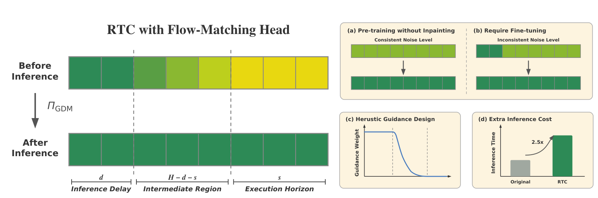
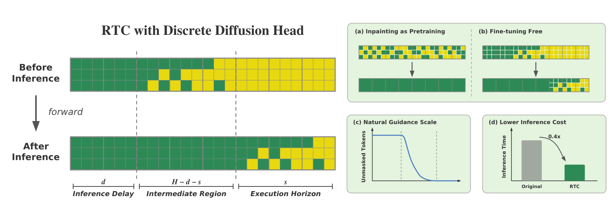
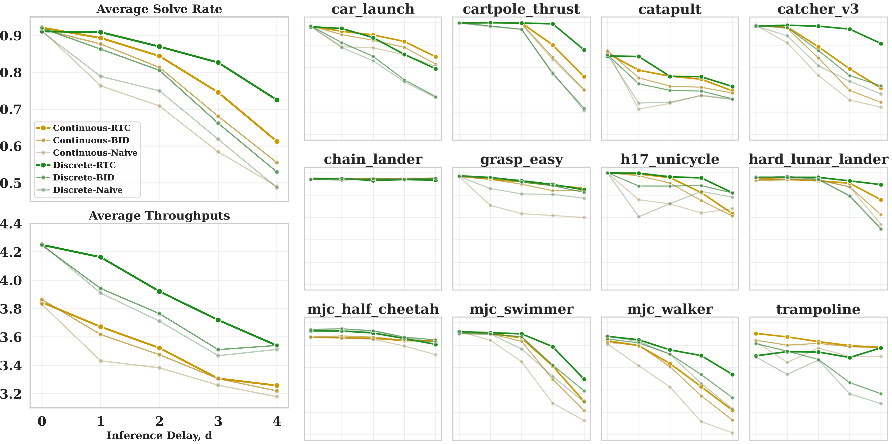
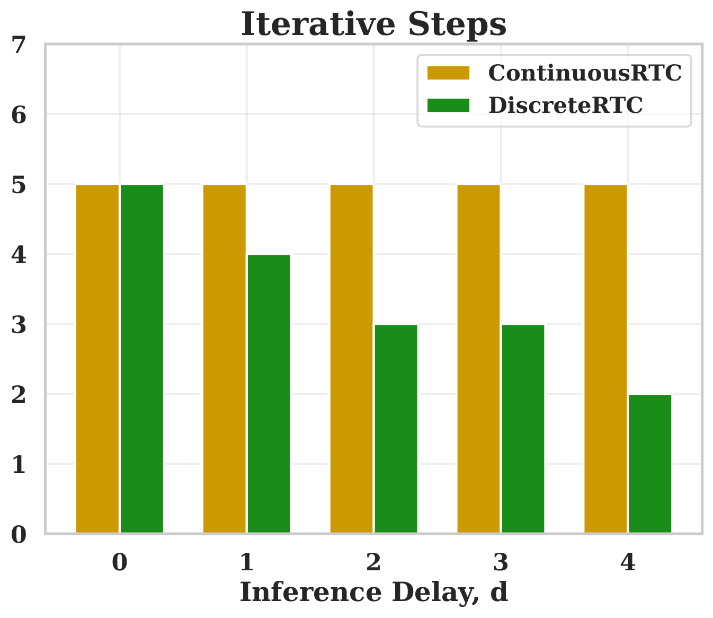
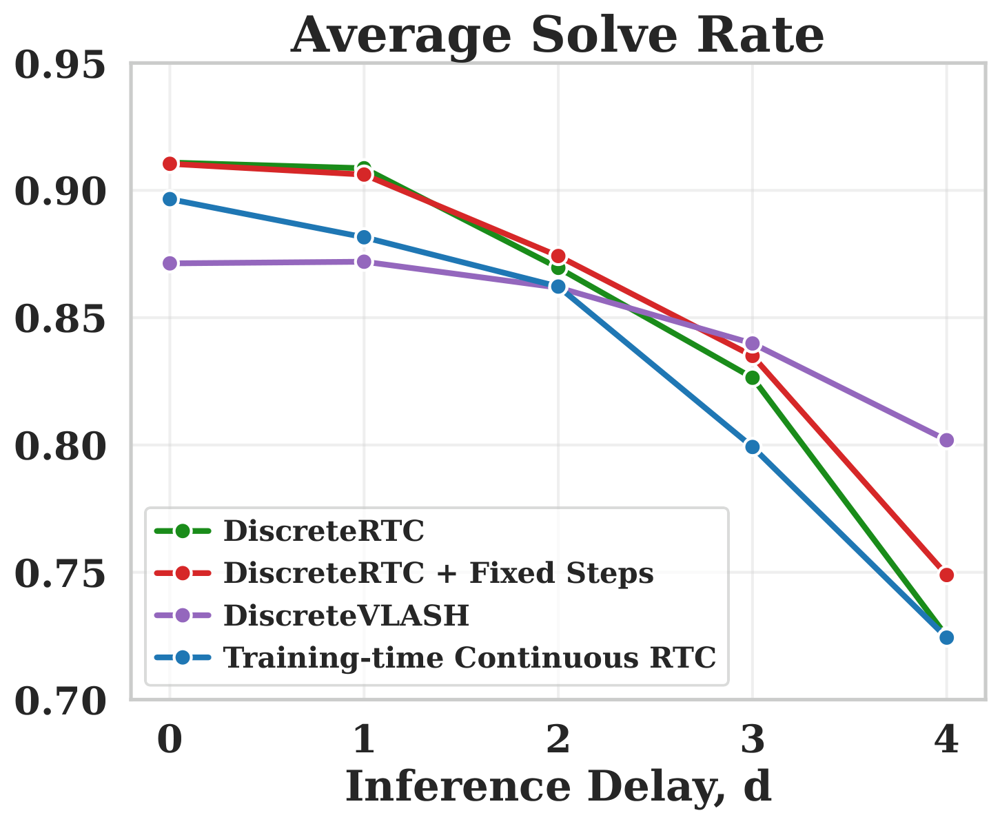

Deploying high-latency generative policies in real-time robot control requires asynchronous execution, where the next action chunk is inferred while the current one is being executed. Real-time chunking (RTC) achieves this for continuous diffusion and flow-matching policies via gradient-based inpainting, but suffers from five key limitations: inability to leverage pre-training, need for inpainting-specific fine-tuning, reliance on heuristic guidance weights, extra inference-time computation from backpropagation, and a distribution mismatch between inpainting conditions at inference versus training.
We observe that discrete diffusion policies — which generate actions by iteratively unmasking tokens — are natural asynchronous executors: inpainting is their native operation, eliminating the first four limitations without any architectural or algorithmic modification. To address the remaining distribution mismatch, we propose a fine-tuning recipe that exposes the model to its own predictions as conditioning context during training.
Experiments on simulated dynamic control benchmarks demonstrate that DiscreteRTC outperforms continuous RTC and other asynchronous baselines in both success rate and throughput, while being simpler and computationally cheaper.
Flow-matching policies require gradient-based inpainting (ΠGDM) for asynchronous execution, which introduces fundamental limitations. During pre-training, all actions within a chunk are corrupted at the same noise level and denoised together — but RTC requires generating from mixed-noise chunks, a pattern the model has never seen. This mismatch necessitates inpainting-specific fine-tuning, heuristic guidance weight design, and expensive gradient computation at every denoising step.

In discrete diffusion, inpainting is structurally identical to standard masked generation: given a partially masked token sequence, the model predicts and unmasks the missing tokens. No architectural modification, no additional loss term, and no inference-time guidance are needed. The model generates conditioned on unmasked tokens exactly as it was trained.

We evaluate DiscreteRTC on Kinetix, a simulated benchmark of dynamic tasks with force-based control (throwing, catching, balancing), where inference delay necessitates asynchronous execution. All methods use the same training setup and network size for fair comparison, with 512-bin quantization for discrete action tokenization.

Across all inference delays, DiscreteRTC consistently outperforms ContinuousRTC and other variants on both solve rates and throughputs, showing the great advantages of the native inpainting capability in discrete diffusion policies. Moreover, DiscreteRTC requires fewer iterative steps than ContinuousRTC, especially under large delays with execution horizon.


Figure 5 presents the results of extended variants:
We validate DiscreteRTC on real-world robotic manipulation tasks to demonstrate its practical effectiveness under real inference latency conditions.
Conclusions. We presented DiscreteRTC, which exploits the native inpainting capability of discrete diffusion for asynchronous real-time control, eliminating the need for inpainting-specific fine-tuning, heuristic guidance weights, and extra inference cost inherent to flow-matching-based RTC. Simulated and real-world experiments show that DiscreteRTC outperforms ContinuousRTC and other asynchronous baselines, and can be combined with methods such as VLASH for further gains.
Limitations. Our approach uses naive k-bin quantization, which ignores the temporal structure of action sequences. The modularized architecture — an autoregressive VLM paired with a separate discrete diffusion action head — prevents the backbone from participating in iterative unmasking, limiting information flow between perception and action.
Future Steps. These limitations point to two directions: (1) a time-causally ordered action tokenizer that produces temporally ordered, compact token representations; and (2) a unified discrete diffusion VLA in which observation reasoning and action generation share the same backbone.
@article{discretertc2026,
title = {Discrete Diffusion Policies are Natural Asynchronous Executors},
author = {Anonymous},
journal = {CoRL},
year = {2026},
}